Characterizing mPOA cell-type heterogeneity with spatial bootstrapping
Source:vignettes/characterizing-mPOA-cell-type-heterogeneity.Rmd
characterizing-mPOA-cell-type-heterogeneity.RmdIn this tutorial, we will use SEraster to rasterize the
mouse medial preoptic region dataset assayed by MERFISH to demonstrate
how tissue section size affects cell-type proportions estimates.
Load libraries
suppressMessages(library(SpatialExperiment))
suppressMessages(library(SEraster))
suppressMessages(library(Matrix))
suppressMessages(library(ggplot2))One tissue sample of the MERFISH mPOA (bregma -0.29 slice from a
female naive animal) dataset is already formatted as a
SpatialExperiment object and is available in the
SEraster package. We will use this preprocessed dataset in
this tutorial (https://jef.works/`SEraster`/reference/merfish_mousePOA.html).
Visualize cell-type annotations
First, let’s grab the cell-type annotations from the
SpatialExperiment object.
ct <- merfish_mousePOA$celltype; names(ct) <- colnames(merfish_mousePOA)
ct <- as.factor(ct)
head(ct)
length(ct)
length(levels(ct))## 6d6b1d59-6f3b-4a9d-b5a4-8c8b073ae025 76200644-c14a-4cfa-8752-2a02e5f10d20
## OD Mature 2 OD Immature 1
## 6b08ca36-b395-415a-bb34-d7b67550c35d b9cb9cfb-fff7-426e-8c36-18fe428ca156
## Inhibitory Excitatory
## 982cc0fc-6d11-4dc4-9ffc-c8c0cee48e6d ee13ce4c-adf8-4602-9a21-23fdf91d28e0
## OD Mature 2 Inhibitory
## 16 Levels: Ambiguous Astrocyte Endothelial 1 Endothelial 2 ... Pericytes
## [1] 6509
## [1] 16Next, we can use ggplot2 to visualize the cell-type annotations in this tissue section of around 6500 cells comprising 16 cell-types.
## plot
suppressMessages(library(ggplot2))
pos <- spatialCoords(merfish_mousePOA)
df <- data.frame(pos, ct = ct)
ggplot(df, aes(x = x, y = y, color = ct)) +
coord_fixed() +
geom_point(size = 0.01) +
theme_bw()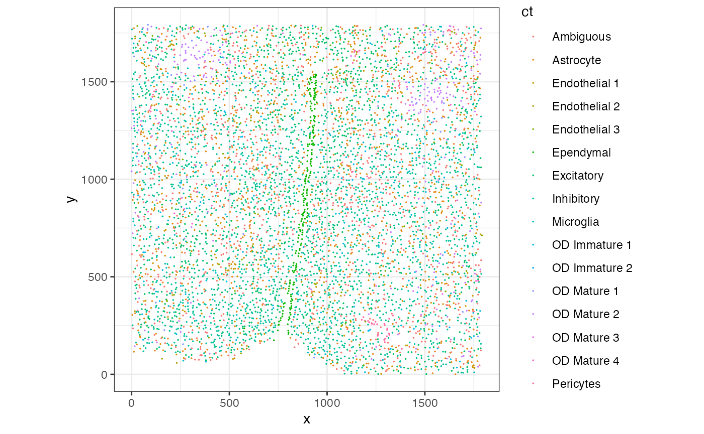
To estimate the cell-type proportions in the whole tissue, we can count the number of each cell-type, divide by the total number of cells and multiply by 100. From this estimation, we see that approximately 30.9% of the cells are Inhibitory, 20.3% are Excitatory, 15.2% are Ambigious, and so forth.
## ct
## Inhibitory Excitatory Ambiguous Astrocyte Endothelial 1
## 30.92640959 20.26424950 15.24043632 11.72223076 5.56153019
## OD Mature 2 OD Immature 1 Ependymal Microglia Endothelial 3
## 4.04055923 3.36457213 3.10339530 2.07405131 1.62851436
## Pericytes OD Mature 1 Endothelial 2 OD Mature 4 OD Mature 3
## 0.70671378 0.59917038 0.41481026 0.27654018 0.04609003
## OD Immature 2
## 0.03072669Use SEraster to create spatial bootstrap samples
To investigate a smaller section of the tissue, we can use
SEraster to aggregate cellular information into square or
hexagonal pixels at a resolution of your choosing and investigate the
cell-type proportions of each pixel.
suppressMessages(library(SEraster))
## rasterize at 200um resolution with hexagons
rastCt <- SEraster::rasterizeCellType(merfish_mousePOA,
col_name = "celltype",
resolution = 200,
fun = "sum",
square = FALSE)
## plot
SEraster::plotRaster(rastCt, name = "Total cells")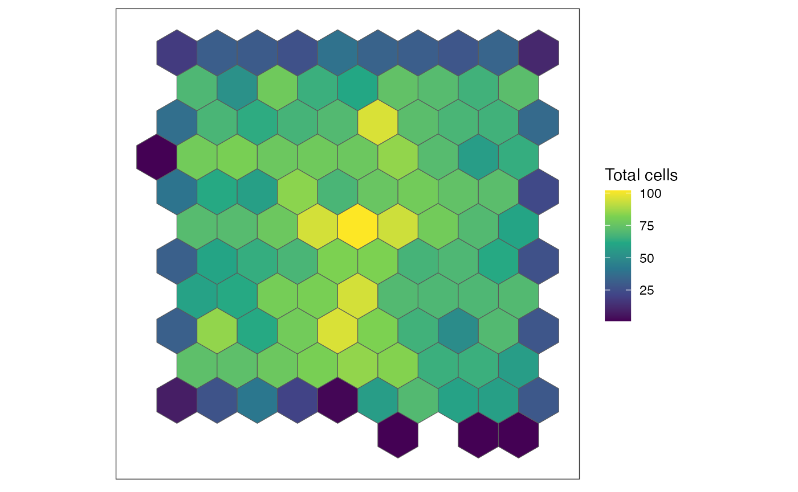
SEraster keeps track of the number of cells in each of
these hexagonal pixels and the names of the cells per pixel.
head(colData(rastCt))## DataFrame with 6 rows and 6 columns
## num_cell
## <integer>
## pixel11 1
## pixel14 8
## pixel15 32
## pixel16 32
## pixel17 40
## pixel18 38
## cellID_list
## <list>
## pixel11 5ade45cb-f1de-45c1-9..
## pixel14 6d6b1d59-6f3b-4a9d-b..,6b08ca36-b395-415a-b..,1baf79d2-f1b7-4a58-9..,...
## pixel15 013f2667-a83f-44b9-a..,dfbf1f48-bdc3-41d8-9..,7320a328-21b2-4c7d-8..,...
## pixel16 2ba4ad43-935e-4dc6-8..,423b0b5d-f22c-464e-a..,29bbf554-d2f2-4ae0-9..,...
## pixel17 6612e339-aabd-4273-a..,ff72229c-5a4f-4dc4-b..,19ff3769-a405-4936-8..,...
## pixel18 1f02025e-2a6d-4b80-9..,c753b3b2-c9aa-4f16-9..,65bc38da-8d3c-4633-8..,...
## type resolution geometry sample_id
## <character> <numeric> <sfc_POLYGON> <character>
## pixel11 hexagon 200 list(c(-100, -200, -.. sample01
## pixel14 hexagon 200 list(c(0, -100, -100.. sample01
## pixel15 hexagon 200 list(c(0, -100, -100.. sample01
## pixel16 hexagon 200 list(c(0, -100, -100.. sample01
## pixel17 hexagon 200 list(c(0, -100, -100.. sample01
## pixel18 hexagon 200 list(c(0, -100, -100.. sample01
## check how many pixels were generated
length(colData(rastCt)$cellID_list)## [1] 109
## find the hexagonal pixel with the most number of cells
maxCells <- max(rastCt$num_cell) ## 102
pixel <- colnames(rastCt)[colData(rastCt)$num_cell == maxCells]
pixelIdx <- which(colnames(rastCt) == pixel)
print(paste(pixel, " at index ", pixelIdx, " has ", maxCells, " cells."))## [1] "pixel75 at index 54 has 102 cells."
## double check
colData(rastCt)[pixelIdx,]## DataFrame with 1 row and 6 columns
## num_cell
## <integer>
## pixel75 102
## cellID_list
## <list>
## pixel75 1022d599-865f-4cf8-9..,c3f95685-61b7-4911-9..,d22dd31f-a6d7-437d-b..,...
## type resolution geometry sample_id
## <character> <numeric> <sfc_POLYGON> <character>
## pixel75 hexagon 200 list(c(900, 800, 800.. sample01Now, let’s grab the cell-type annotations from the pixel with the highest number of cells and plot the cell-types
## 54th pixel
cells <- colData(rastCt)$cellID_list[[pixelIdx]]
## double check if the number of cells in this pixel matches maxCell
length(cells) == maxCells
## visualize the cells in the 54th pixel
dfsub <- data.frame(pos[cells,], ct = ct[cells])
ggplot(dfsub, aes(x = x, y = y, color = ct)) +
coord_fixed() +
geom_point(size = 1.5) +
theme_bw()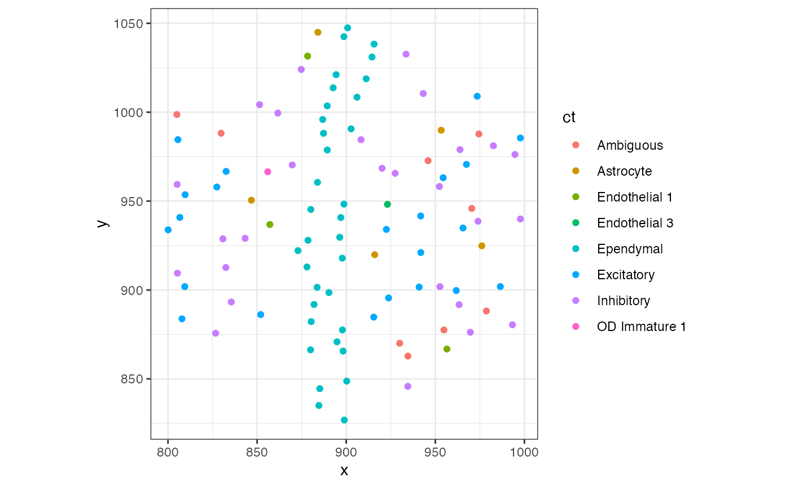
## [1] TRUEOnce again, we can estimate the cell-type proportions. But this time, in pixel 54.
##
## Ependymal Inhibitory Excitatory Ambiguous Astrocyte
## 33.3333333 26.4705882 21.5686275 8.8235294 4.9019608
## Endothelial 1 Endothelial 3 OD Immature 1 Endothelial 2 Microglia
## 2.9411765 0.9803922 0.9803922 0.0000000 0.0000000
## OD Immature 2 OD Mature 1 OD Mature 2 OD Mature 3 OD Mature 4
## 0.0000000 0.0000000 0.0000000 0.0000000 0.0000000
## Pericytes
## 0.0000000We see that approximately 33.3% of the cells in this pixel are Ependymal, 26.5% are Inhibitory, 21.6% are Excitatory, and so forth. This section of the tissue has a relatively high proportion of Ependymal cells compared to the whole tissue. Cell-type proportions for Inhibitory, Excitatory, and Ambiguous are pretty high, consistent with the whole tissue analysis we’ve done earlier.
Now let’s visualize where this pixel is located within the whole tissue by isolating cells not contained in the hexagonal pixel 54.
ctsub <- ct
ctsub[!(names(ctsub) %in% cells)] <- NA
df <- data.frame(pos, ctsub = ctsub)
ggplot(df, aes(x = x, y = y, color = ctsub)) +
coord_fixed() +
geom_point(size = 0.1) +
theme_bw()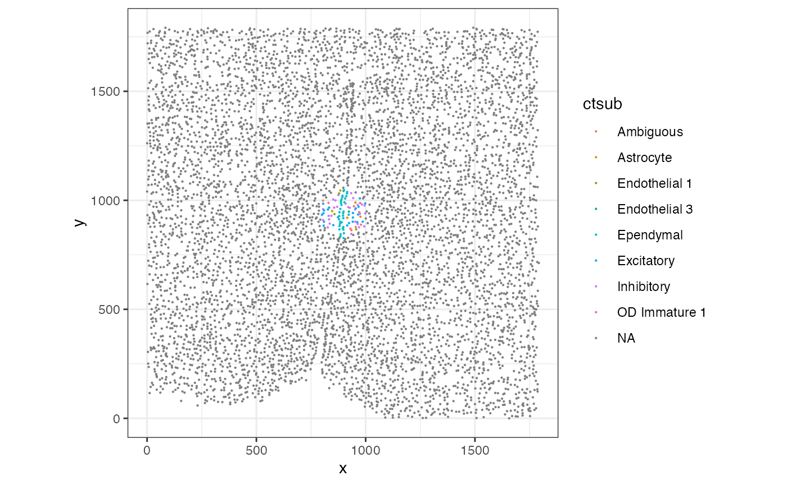
Evaluate stability of cell-type proportions
Let’s assess how good this pixel-based cell-type proportion estimation is in each hexagonal pixel.
## grab list cell IDs for each hexagonal pixel
cellidsPerBiopsy <- colData(rastCt)$cellID_list
names(cellidsPerBiopsy) <- colnames(rastCt)
## loop through and count number of each cell-type
ctprop <- do.call(rbind, lapply(cellidsPerBiopsy, function(i) {
table(ct[i])
}))
rownames(ctprop) <- names(cellidsPerBiopsy)
head(ctprop)## Ambiguous Astrocyte Endothelial 1 Endothelial 2 Endothelial 3 Ependymal
## pixel11 0 0 0 0 0 0
## pixel14 0 3 0 0 0 0
## pixel15 10 3 4 0 0 0
## pixel16 7 2 0 0 0 0
## pixel17 8 1 3 0 0 0
## pixel18 4 0 0 0 1 0
## Excitatory Inhibitory Microglia OD Immature 1 OD Immature 2 OD Mature 1
## pixel11 0 0 0 0 0 0
## pixel14 0 4 0 0 0 0
## pixel15 6 7 0 1 0 0
## pixel16 10 6 3 1 0 0
## pixel17 2 16 2 2 0 1
## pixel18 6 21 0 3 0 1
## OD Mature 2 OD Mature 3 OD Mature 4 Pericytes
## pixel11 1 0 0 0
## pixel14 1 0 0 0
## pixel15 1 0 0 0
## pixel16 3 0 0 0
## pixel17 4 0 1 0
## pixel18 2 0 0 0
## divide by total cells per pixel
## and multiple by 100 to make into percents
ctpropNorm <- ctprop/rowSums(ctprop)*100
head(rowSums(ctpropNorm)) ## confirm sum is 100## pixel11 pixel14 pixel15 pixel16 pixel17 pixel18
## 100 100 100 100 100 100
head(ctpropNorm)## Ambiguous Astrocyte Endothelial 1 Endothelial 2 Endothelial 3 Ependymal
## pixel11 0.00000 0.000 0.0 0 0.000000 0
## pixel14 0.00000 37.500 0.0 0 0.000000 0
## pixel15 31.25000 9.375 12.5 0 0.000000 0
## pixel16 21.87500 6.250 0.0 0 0.000000 0
## pixel17 20.00000 2.500 7.5 0 0.000000 0
## pixel18 10.52632 0.000 0.0 0 2.631579 0
## Excitatory Inhibitory Microglia OD Immature 1 OD Immature 2 OD Mature 1
## pixel11 0.00000 0.00000 0.000 0.000000 0 0.000000
## pixel14 0.00000 50.00000 0.000 0.000000 0 0.000000
## pixel15 18.75000 21.87500 0.000 3.125000 0 0.000000
## pixel16 31.25000 18.75000 9.375 3.125000 0 0.000000
## pixel17 5.00000 40.00000 5.000 5.000000 0 2.500000
## pixel18 15.78947 55.26316 0.000 7.894737 0 2.631579
## OD Mature 2 OD Mature 3 OD Mature 4 Pericytes
## pixel11 100.000000 0 0.0 0
## pixel14 12.500000 0 0.0 0
## pixel15 3.125000 0 0.0 0
## pixel16 9.375000 0 0.0 0
## pixel17 10.000000 0 2.5 0
## pixel18 5.263158 0 0.0 0Let’s visualize the resulting cell-type proportions per hexagonal pixel as a stacked barplot
suppressMessages(library(reshape2))
# Melt the data frame to long format
df <- data.frame(ctpropNorm)
df$Sample <- rownames(df)
dfLong <- melt(df, id.vars = "Sample", variable.name = "CellType", value.name = "Proportion")
head(dfLong)## Sample CellType Proportion
## 1 pixel11 Ambiguous 0.00000
## 2 pixel14 Ambiguous 0.00000
## 3 pixel15 Ambiguous 31.25000
## 4 pixel16 Ambiguous 21.87500
## 5 pixel17 Ambiguous 20.00000
## 6 pixel18 Ambiguous 10.52632
## create the stacked barplot using ggplot2
ggplot(dfLong, aes(x = Sample, y = Proportion, fill = CellType)) +
geom_bar(stat = "identity") +
labs(title = "Stacked Barplot of Cell Type Proportions",
x = "Sample",
y = "Proportion") +
theme_minimal() +
theme(axis.text.x = element_text(angle = 90, vjust = 0.5, hjust=1, size=5))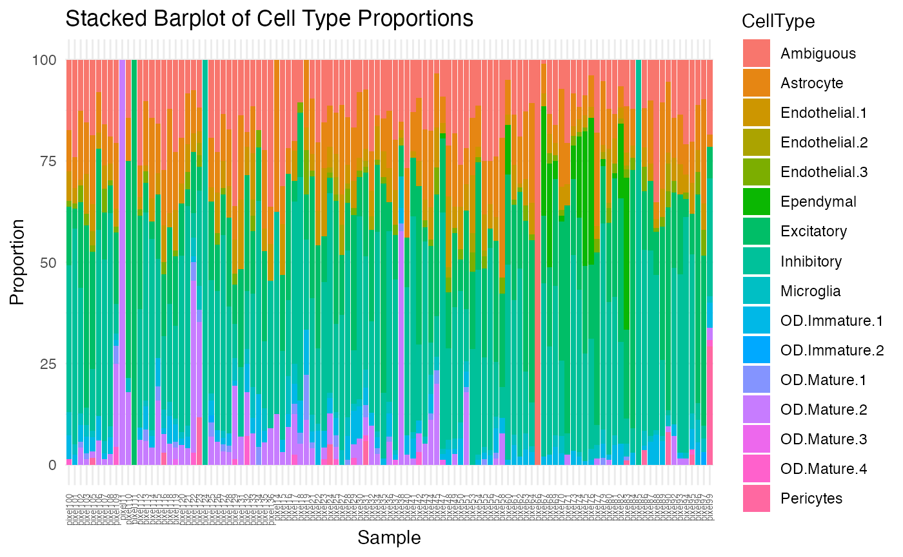
Based on this visualization, we can observe that there is quite a lot of variability in cell-type proportions across each pixel. Let’s find which pixels are the most different from our global cell-type proportion estimate.
diff <- sapply(1:nrow(ctpropNorm), function(i) {
sum((ctpropNorm[i,]-globalEstimate)^2)
})
names(diff) <- rownames(ctpropNorm)
head(sort(diff, decreasing=TRUE))## pixel11 pixel66 pixel111 pixel85 pixel124 pixel38
## 11004.924 8764.949 7760.186 5627.754 5627.754 4150.976
ctpropNorm['pixel11',]
colData(rastCt)['pixel11',]$num_cell## Ambiguous Astrocyte Endothelial 1 Endothelial 2 Endothelial 3
## 0 0 0 0 0
## Ependymal Excitatory Inhibitory Microglia OD Immature 1
## 0 0 0 0 0
## OD Immature 2 OD Mature 1 OD Mature 2 OD Mature 3 OD Mature 4
## 0 0 100 0 0
## Pericytes
## 0
## [1] 1Notice there is only one cell contained in this pixel, and 100% of the pixel of OD Mature 2 cell-type.
pixelIdx <- which(colnames(rastCt) == 'pixel11')
cells <- colData(rastCt)$cellID_list[[pixelIdx]]
## visualize the cells in the 54th pixel
df <- t(data.frame(pos[cells,]))
rownames(df) <- cells
ggplot(df, aes(x = x, y = y, color = ct[cells])) +
coord_fixed() +
geom_point(size = 2) +
theme_bw()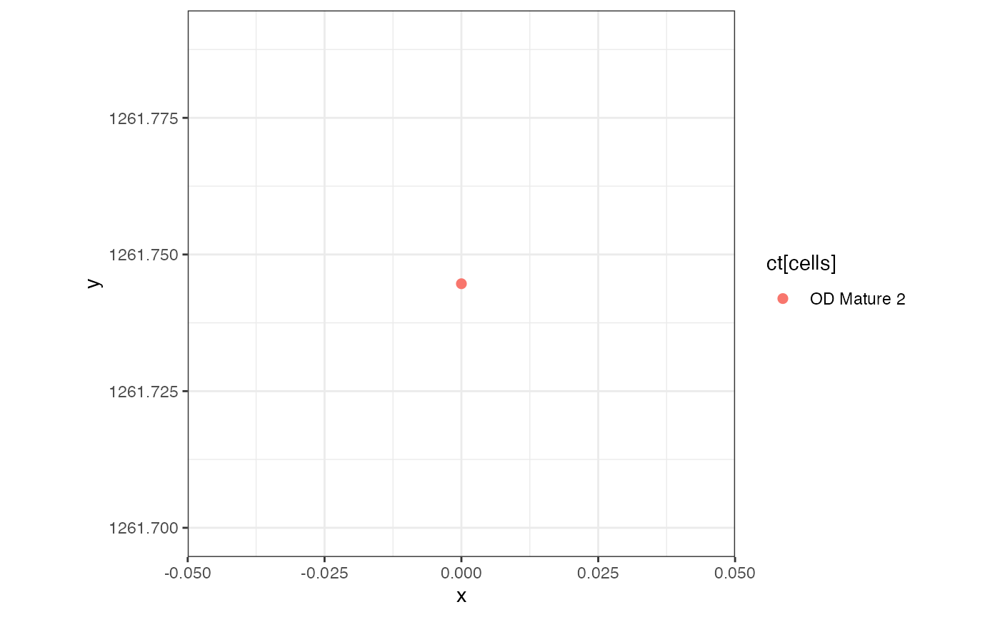
## in whole tissue by setting cells not in hexagonal to NA
ctsub <- ct
ctsub[!(names(ctsub) %in% cells)] <- NA
df <- data.frame(pos, ctsub = ctsub)
ggplot(df, aes(x = x, y = y, color = ctsub)) +
coord_fixed() +
geom_point(size = 0.5) +
theme_bw()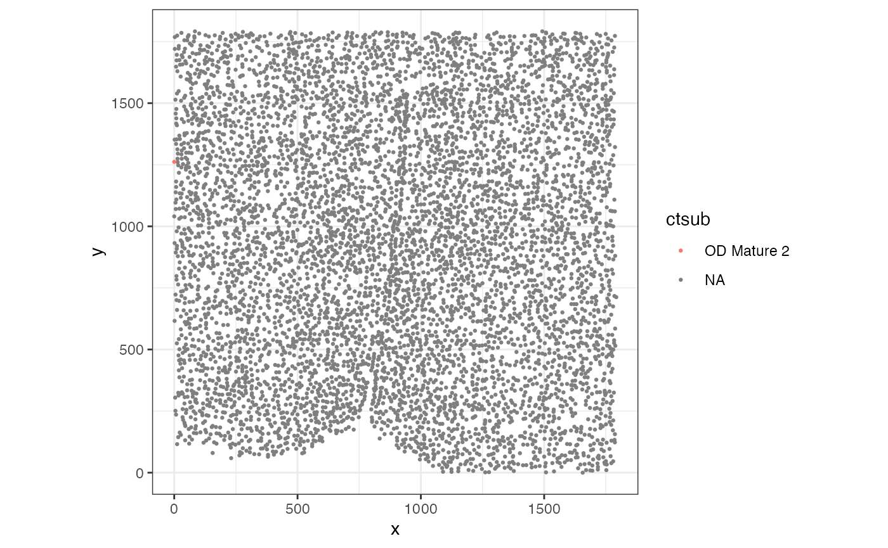
Visually, this pixel is located at the edge of tissue and thus not representative of the whole tissue.
Let’s see the distribution of the number of cells in each hexagonal pixel.
## histogram of number of cells per pixel
hist(colData(rastCt)$num_cell)
## we can set a threshold of only caring about pixels with more than 40 cells
abline(v = 40, col='red')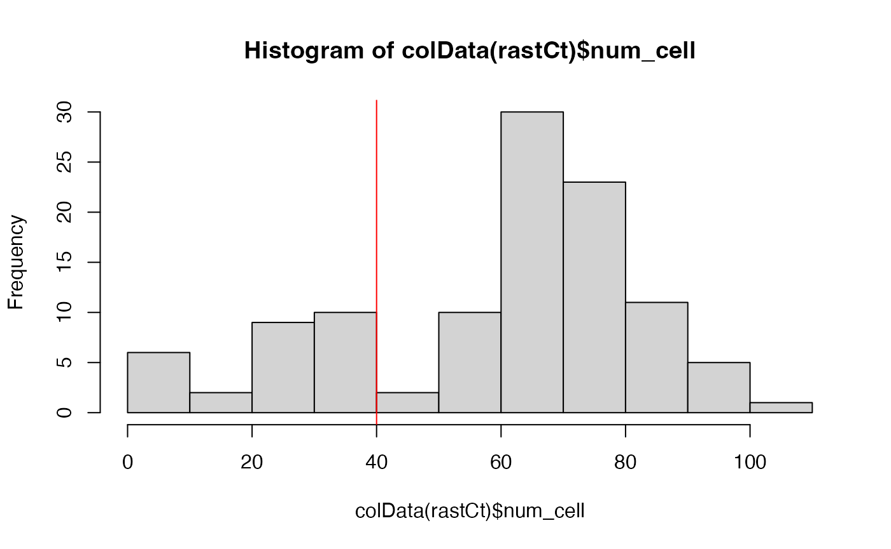
## get pixels with more than 40 cells
goodPixels <- colnames(rastCt)[colData(rastCt)$num_cell > 40]
length(goodPixels)## [1] 82
head(goodPixels)
goodPixelIdx <- sapply(goodPixels, function(pixel) {
which(colnames(rastCt) == pixel)
})
head(goodPixelIdx)
## double check
colnames(rastCt)[8] == "pixel21"
`SEraster`::plotRaster(rastCt[, goodPixelIdx], name = "Total Cells")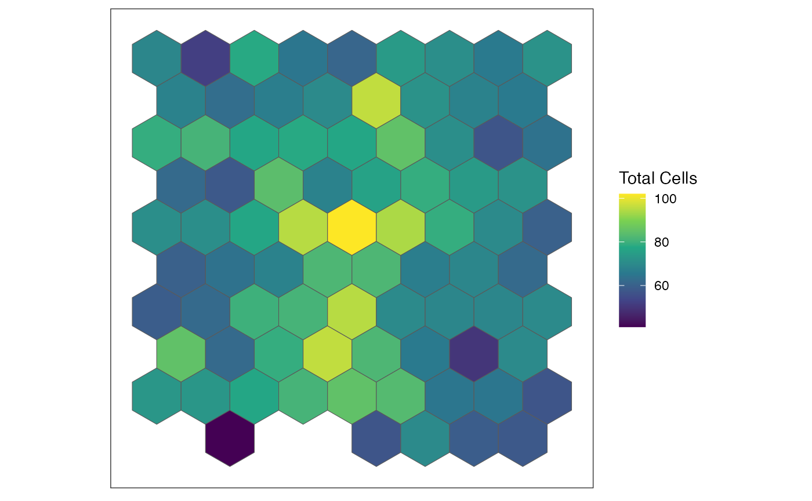
## [1] "pixel21" "pixel22" "pixel23" "pixel24" "pixel25" "pixel28"
## pixel21 pixel22 pixel23 pixel24 pixel25 pixel28
## 8 9 10 11 12 14
## [1] TRUENow, let’s look at the cell-type proportions for the good pixels we selected.
## just look at ctpropNorm for good pixels
df <- data.frame(ctpropNorm[goodPixelIdx,])
df$Sample <- rownames(df)
dfLong <- melt(df, id.vars = "Sample", variable.name = "CellType", value.name = "Proportion")
ggplot(dfLong, aes(x = Sample, y = Proportion, fill = CellType)) +
geom_bar(stat = "identity") +
labs(title = "Stacked Barplot of Cell Type Proportions",
x = "Sample",
y = "Proportion") +
theme_minimal() +
theme(axis.text.x = element_text(angle = 90, vjust = 0.5, hjust=1, size=5))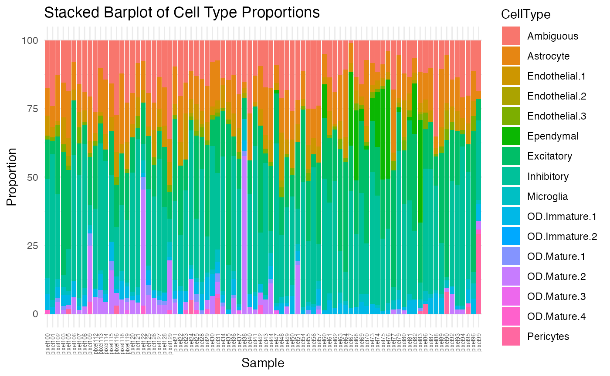
Although better than the previous stacked barplot, there is still some variability, mostly from the Ependymal, OD Mature 2, and Pericytes cell-types. Let’s visualize them based on increasing proportion of each cell-type.
ct.list <- c("Ependymal", "OD.Mature.2", "Pericytes")
for (ct in ct.list) {
df <- data.frame(ctpropNorm[goodPixelIdx,])
df$Sample <- rownames(df)
## let's create a separate data frame to visualize based on increasing proportion of cell type
dfLong_ct <- melt(df, id.vars = "Sample", variable.name = "CellType", value.name = "Proportion")
## filter dfLong for based on cell type
df_ct <- dfLong_ct[dfLong_ct$CellType == ct, ]
## order the pixels by increasing cell type proportions
ordered_pixels <- df_ct$Sample[order(df_ct$Proportion)]
## convert the sample column to a factor in the with
dfLong_ct$Sample <- factor(dfLong_ct$Sample, levels = ordered_pixels)
show(ggplot(dfLong_ct, aes(x = Sample, y = Proportion, fill = CellType)) +
geom_bar(stat = "identity") +
labs(title = paste0("Stacked Barplot Based on Increasing ", ct, " Proportion"),
x = "Sample",
y = "Proportion") +
theme_minimal() +
theme(axis.text.x = element_text(angle = 90, vjust = 0.5, hjust=1, size=5)))
}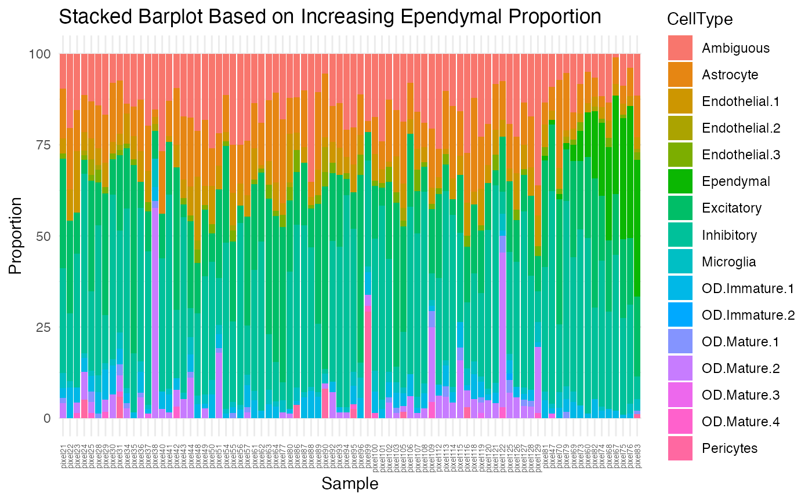 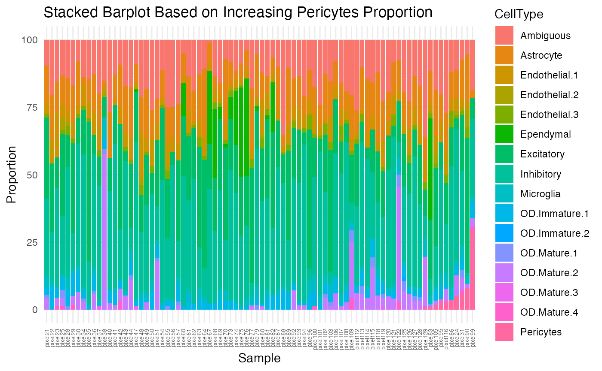
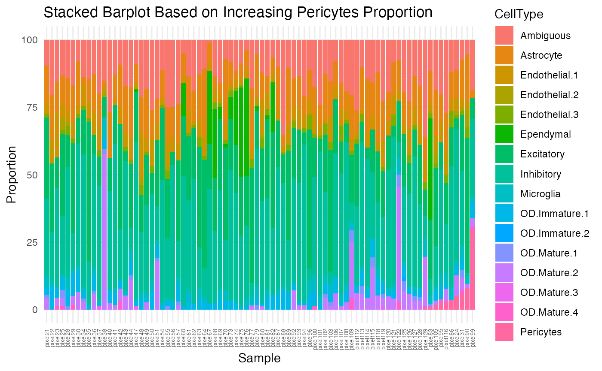
Visualize cell-type specific patterns
The plotRaster function in SEraster allows
us to visualize the cell counts by specific cell-types. Let’s try and
visualize the spatial distribution of cell counts in these variable
cell-types.
ct.list <- c("Ependymal", "OD Mature 2", "Pericytes")
for (ct in ct.list) {
show(plotRaster(rastCt, plotTitle = ct, feature_name = ct, name = "counts"))
}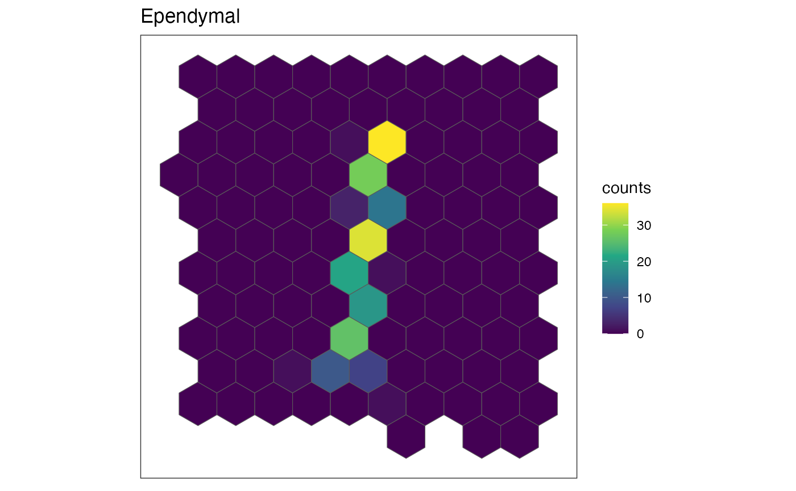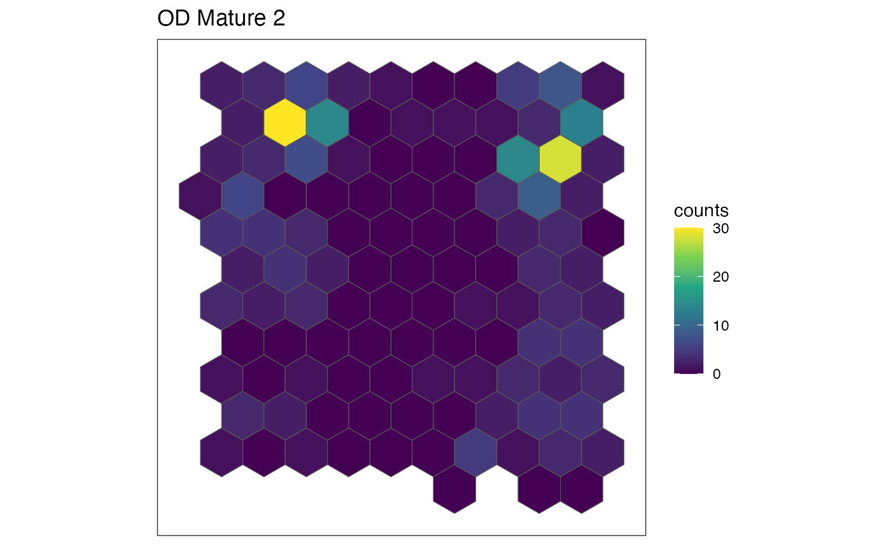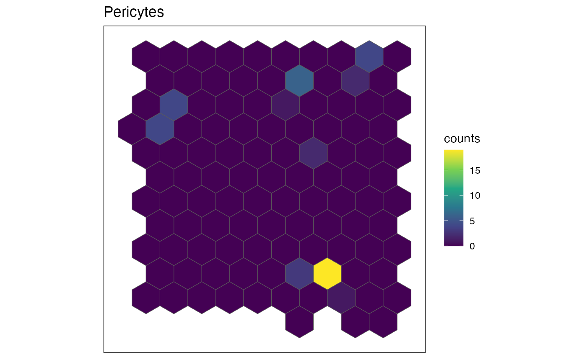
Indeed, we can see that these cell-types are expressed in a spatially variable manner, meaning the pixels containing most of these cell-types are generally not representative of the entire tissue.
This tutorial is adapted from the blog post “Characterizing spatial heterogeneity using spatial bootstrapping with SEraster”. Find it here: (https://jef.works/blog/2024/07/23/spatial-bootstrapping-with-seraster/)